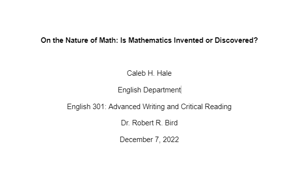

Writing

I have planned dozens of books to various levels of detail and begun serious writing on a handful, as well as written a few short stories. At the time of writing this none are published, but I hope to find the time and courage to become more serious about publishing my works and getting more of my ideas onto paper. Included among my ideas are fantasy stories with several different magic systems, some sci-fi, some supernatural stories, etc. I have a dozen books on writing I've been meaning to read, but even without reading them I've felt my writing grow as I have practiced and taken insights from other (published) writers. I'm excited for the opportunity to write and publish original stories that have a special creative-scientific-dramatic flair that comes from my own unique personality blend.
Although I often write fiction, I enjoy writing about things I'm passionate about from time to time, usually just to gather my thoughts, although you can see a paper I wrote on mathematics in college, which I enjoyed researching and preparing.
